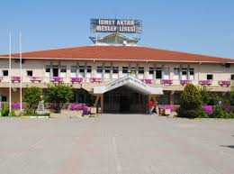
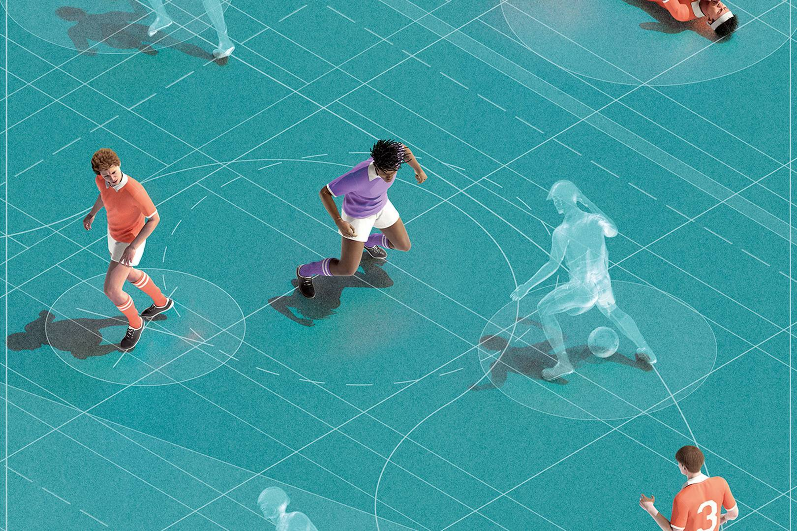
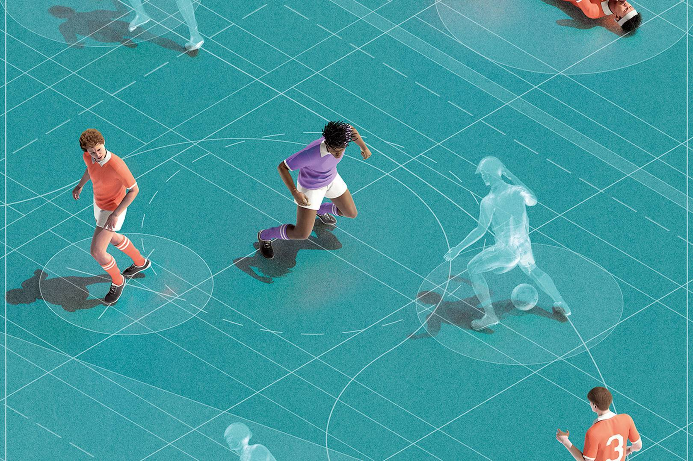

Merhaba !
Merhaba! Ben İlker Yalçın Şen. 23 Mayıs 2008 doğumluyum. Sinopluyum ancak İstanbul’da yaşıyorum. Eğitimime İsmet Aktar Mesleki ve Teknik Anadolu Lisesi’nde devam ediyorum. Bilişim dünyasına olan ilgim, benim için büyük bir tutku. Burada, teknoloji, futbol ve yaşamla ilgili düşüncelerimi paylaşmayı umuyorum. Deneyimlerimi, öğrendiklerimi ve ilgi alanlarımı sizlerle buluşturmak için buradayım. Umarım yazılarımı keyifle okursunuz!

İsmet Aktar Mesleki ve Teknik Anadolu Lisesi
Hakkımda
Benim adım İlker Yalçın Şen. Bilişim alanında kendimi geliştirmek için çeşitli dersler alıyor ve projeler üzerinde çalışıyorum. Özellikle programlama dilleri, web geliştirme ve veri analizi gibi konulara ilgi duyuyorum.
Futbol ise hayatımın vazgeçilmez bir parçası. Takım ruhunun önemini hissederek, hem izlemek hem de oynamak büyük bir tutku. Ayrıca, kendimi geliştirmek için vücut geliştirme ile de ilgileniyorum; bu, hem fiziksel hem de zihinsel sağlığımı iyileştirmemi sağlıyor.
Gelecekteki hedeflerim doğrultusunda ders çalışmayı da ihmal etmiyorum. Eğitimin, kariyerimdeki başarı için temel bir unsur olduğuna inanıyorum. Teknolojinin sürekli değiştiği bu dönemde yenilikçi çözümler geliştirmek için çaba sarf etmek istiyorum. Futbol ve bilişim dünyası arasındaki etkileşimleri keşfetmek de ilgimi çekiyor.
 Yazılım

Futbol Veri Analizi
Yazılım

Futbol Veri Analizi